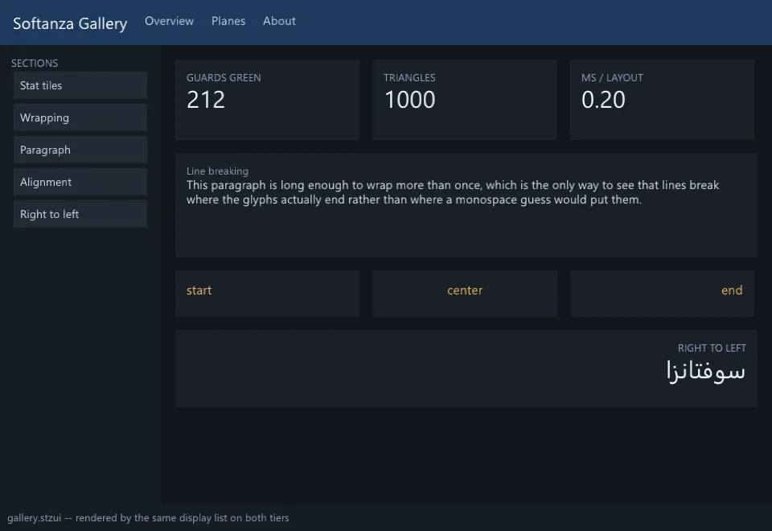

Une interface Softanza est déclarée, et le balisage qu'un moteur d'interface lit n'est qu'une projection de la déclaration, générée et jamais écrite à la main. Le plan est jeune, il tourne, et deux de ses couloirs font déjà ce que la plupart des boîtes à outils ne font pas.
Le moteur est RmlUi, embarqué pour sa licence permissive, son rendu fourni par l'hôte, son vrai modèle d'entrée et l'absence de moteur JavaScript. Un fichier .panel déclare panneaux, boîtes, textes et styles dans une grammaire close dotée d'un tribunal : un champ inconnu est une erreur, et chaque élément porte une raison d'être obligatoire. De cette intention, et non du balisage, un arbre d'accessibilité est engendré et remis au système par AccessKit, pour qu'un lecteur d'écran reçoive ce que l'auteur voulait dire. Le droite-à-gauche est possédé de bout en bout, parce que RmlUi n'en fait rien : un seul mot déclaré, rtl, inverse les rangées, résout début et fin en côtés physiques, et le moteur réordonne et façonne le texte. Le rendu est un enregistreur, pas un peintre : une seule liste d'affichage à plat que le plan graphique dessine sur le GPU, ou en SVG sans aucun périphérique.
À côté, un vrai moteur réactif sur un réacteur libuv : des valeurs qui se mettent à jour d'elles-mêmes, des dépendances calculées, des flux, des minuteries, HTTP, un bus d'événements, nommés avec des mots simples plutôt que des rappels et des abonnés. Et stzApp modélise une application comme un monde de sens vivant, un domaine, une vie avec des buts, un corps, qui s'explique en texte clair : WORLD SonibankVisits lives in: memory.
oApp = new stzApp("SonibankVisits")
oApp {
AddThingQ(:Client) { Has([ :code, :name, :city ]) }
AddThingQ(:Visit) { Of(:Client) Has([
:agent,
:date,
:subject
]) }
AddFlowQ(:agent, :records, :Visit) {
Require(:subject) Then( Keep(:Visit) )
}
AddReactionQ(:Client).Unseen(90, :Days) { Propose(:Visit) }
}
# the declaration, read back in words
oApp.Explain()
#--> WORLD SonibankVisits lives in: memory (not persisted)
#--> BEING
#--> client (code, name, city)
#--> visit (agent, date, subject)
#--> RELATIONS
#--> visit of client
#--> BECOMING
#--> when agent records visit require subject then keep visit
#--> whenever client unseen 90 days -> propose visit
exécuté dans la bibliothèque le 2026-10-20
La ligne honnête est courte. Le moteur réactif n'est pas encore relié à la vue, la liaison est impérative, les composants sont les contrôles de base de RmlUi, il n'y a ni système de thèmes, ni animation, ni saisie composée pour les écritures complexes. Deux couloirs Strong, six Solid ; le premier dû est le pont des signaux vers l'écran.

une fenêtre mise en page par le plan des interfaces : tuiles, texte replié, alignement et droite-à-gauche. rendu par la propre garde du plan, déposé dans la bibliothèque au commit 0fbaa692a sous base/test/gui/gui_gallery.png, lu au commit 4a184e6f0 · la source(s'ouvre dans un nouvel onglet)
Où il en est
La lecture du Compas Softanza : chaque couloir du domaine noté face au meilleur de sa catégorie, d'après ce que les gardes prouvent (Read from the source on 2026-09-16, from a read-only main worktree). Les phrases du Compas sont en anglais, telles qu'il les a écrites.
A young but genuinely coherent GUI plane, built on vendored RmlUi and actually running — windows open, events flow, it renders through the GPU plane and an SVG tier. Two standouts reflect the library's DNA: RTL/bidi fully owned (RmlUi does none — the emitter reverses layout, the engine reorders and shapes via SheenBidi + HarfBuzz), and accessibility built in from the grammar up (a mandatory RATIONALE on every element seeds an ARIA tree exposed to the OS via AccessKit). The rest is early: a closed four-primitive authoring vocabulary, flexbox-only layout, imperative view-binding — and a full reactive runtime that ships but is not yet wired to the GUI. No IME, no theme system, no animation. And the whole plane is on local main only, not yet pushed.
The honesty line on the ratings. Re-surveyed from main (the working branch was stale). The plane genuinely runs and is heavily guarded — 415 GUI assertions across 11 suites (panel, RTL, font, input, accessibility, scene, binding…) plus the reactive suite, all green, with PNG/SVG witnesses (windows open, events flow, Arabic renders). Two delivery facts matter for planning: the entire plane is on local main only, unpushed to origin/codeberg, and it is built and tested on Windows — cross-platform is by design (GLFW / AccessKit / wgpu) but not hardware-verified. The "tick loop" is RunLoop() / Run() (no literal Cycle()), libuv on the engine thread, callbacks on the Haro thread.
The one-sentence position. Softanza's GUI is an early, coherent, governed plane that already does two things better than most — owned RTL/bidi and grammar-level accessibility — over a real running RmlUi+GPU stack; its distance from Qt/Flutter/React is breadth (widgets), the unbuilt bridge from its own reactive runtime to the view, and the modern-UI table stakes (theming, animation, IME) it has scoped but not yet built.
Ce qu'un artisan en fait, et ce qui se distingue
RTL/bidi fully owned end to end
accessibility mandatory at authoring time, exposed via AccessKit
a recorder-not-painter render model with a deviceless SVG tier
an event surface that counts dropped events
Ce qui est dû
wire the reactive runtime to the GUI (G5 clause 2)
a richer widget set
the semantic theme system (G6)
IME & two-way text editing
Repensé depuis les premiers principes
Ce que Softanza a gardé de ce qui marche, et ce qu'elle a repensé, tel que la bibliothèque l'a écrit dans ses documents de conception et ses narrations.
La manière SoftanzaLes déclarations Softanza font contrat ; le balisage que lit le moteur d'interface n'en est qu'une projection, générée et jamais écrite à la main.
Gardé des meilleures pratiques
La mise en page et la saisie viennent de RmlUi plutôt que d'une boîte à outils maison. Il a été choisi pour sa licence permissive, son rendu fourni par l'hôte, l'absence de JavaScript et un vrai modèle de saisie. source(s'ouvre dans un nouvel onglet)
Le format de description reprend une idée de QML : chaque élément est un nom doté de propriétés typées. Les éléments anonymes imbriqués sont refusés, donc chaque boîte a un nom. source(s'ouvre dans un nouvel onglet)
Le travail asynchrone repose sur libuv, boucle d'événements multiplateforme éprouvée, plutôt que sur un réacteur fait maison. Les scripts soumettent et récupèrent leur travail, sans jamais être rappelés. source(s'ouvre dans un nouvel onglet)
Repensé
Le balisage est généré, jamais écrit à la main. Un fichier .panel fait contrat ; RmlUi et HTML n'en sont que des projections, car le balisage manuel échappe aux contrôles. source(s'ouvre dans un nouvel onglet)
L'arbre d'accessibilité est produit à partir de l'intention déclarée, non deviné depuis le balisage, ce qui informe mieux les lecteurs d'écran. Tout élément focalisable a un rôle et un nom. source(s'ouvre dans un nouvel onglet)
Le code réactif s'exprime en mots simples, des fonctions qui attendent, des valeurs qui se mettent à jour seules, plutôt qu'en métaphores comme rappels et abonnés, qui masquent un flux simple. source(s'ouvre dans un nouvel onglet)
Une application est un monde vivant, porteur de sens : un domaine, une vie tendue vers des buts, un corps. Fichiers, base de données et interface n'en sont que la tuyauterie. source(s'ouvre dans un nouvel onglet)
La manière Softanza, exécutée
Ce que Softanza fait autrement dans ce domaine, montré par du code tiré de ses narrations et de ses gardes, et exécuté pour cette page.
Un seul mot déclaré, rtl, est traduit dans la propriété de direction propre au moteur : l'auteur n'écrit jamais le balisage du moteur à la main.
Softanza
oRtl = new stzUiDocument(
'DEFINE PANEL p ( FONT "app", CHILDREN [r] ) RATIONALE "x"' + char(10) +
'DEFINE BOX r ( TEXT_DIRECTION rtl, HEIGHT 20 ) RATIONALE "x"')
chk("TEXT_DIRECTION rtl becomes --rmlui-direction",
StzFindFirst("--rmlui-direction: rtl", oRtl.ToRml()) > 0)
chk("...and never the CSS spelling RCSS rejects",
StzFindFirst("; direction:", oRtl.ToRml()) = 0)
Sortie
[OK] TEXT_DIRECTION rtl becomes --rmlui-direction
[OK] ...and never the CSS spelling RCSS rejects
12 couloirs, chacun face au meilleur de sa catégorie
Pour chaque couloir : ce qui tourne dans le moteur aujourd'hui, les outils contre lesquels il est juste de le mesurer, et ce qui reste dû.
01RTL & bidirectional textStrong
In the engine
Fully owned, because RmlUi does no bidi at all. The emitter (stzUiDocument) reverses flex rows under RTL, resolves logical start/end to physical sides, and builds a direction map with inheritance; the engine shaper (gpu_text.zig) reorders with SheenBidi (UAX#9) and shapes Arabic with HarfBuzz, feeding RmlUi the widths it will actually paint.
Measured against
QtGTK / PangoFlutter
To complete
The peers have built-in bidi; here it is explicit, owned end-to-end, and guarded (including a picture-found bug the asserts had missed). Consistent with the library's first-class Arabic typography — a genuine strength.
02AccessibilityStrong
In the engine
Both halves ship. G4a: every element carries a mandatory RATIONALE that, with ROLE/LABEL, emits an ARIA-role tree (stzAccessibilityTree). G4b: a11y.zig hands that tree to AccessKit, bridging to UI Automation / NSAccessibility / AT-SPI.
Accessibility is mandatory at authoring time, not an afterthought — arguably ahead of peers where a11y is opt-in. The sharp edge (adapter must exist before the window shows) is handled and documented.
03Declarative authoring (.panel)Solid
In the engine
A closed four-kind grammar — PANEL / BOX / TEXT / STYLE — with closed field sets, a diagnostics court (unknown field = error), a .panel→RML→.panel round-trip fixpoint, and mandatory RATIONALE. Emits RML/RCSS (and HTML/CSS for a web projection).
Measured against
Flutter widgetsQMLReact JSX
To complete
A coherent, governed authoring layer — but a four-primitive vocabulary is far narrower than the component models of the peers. Breadth is the widget lane (below).
04LayoutSolid
In the engine
RmlUi flexbox via RCSS: direction, wrap, gap, padding/margin, align, justify, and px / % / fill sizing — emitted as display:flex by stzUiDocument.ring::ToRml().
Measured against
Flutter (flex + custom)CSS grid + flexQt layouts
To complete
CSS Grid is refused by decision, and there is no constraint or custom layout. Flexbox covers most UI, but grid-shaped layouts must be composed by hand.
05Rendering backendSolid
In the engine
RmlUi's render interface is a recorder, not a painter (stz_rmlui.cpp): it records one flat vertex/index display list, which the graphics plane draws via the GPU tier or an SVG tier — one list, two renderers. GUI output is data crossing a C ABI.
Measured against
Qt (RHI)Flutter (Skia / Impeller)GTK (Cairo)
To complete
A clean recorder→GPU/SVG model (the deviceless SVG tier is distinctive) — but it rides the GPU plane's own young f32 renderer, and PNG needs a GPU device.
06Event handlingSolid
In the engine
A complete input surface in the C ABI: pointer move/button/leave, key, text-input, focus + directional focus move, hit-testing (element_at), and an event recorder that counts dropped events. Haro-side focus order and arrow navigation in stzPanel.
Measured against
Qt signals/slotsFlutter gesturesReact events
To complete
The primitives are all there and honest about drops — but no gesture recognition (drag/pinch/swipe) or higher-level event abstractions above raw pointer/key.
07Reactive runtime & signalsSolid
In the engine
A real reactive stack (base/reactive): stzReactiveObject with Watch / Computed(deps) / BindTo / SetAttribute (old≠new gating), plus streams, timers, tasks, HTTP and an event bus — running on a libuv reactor (reactor.zig) with a no-DLL cooperative fallback.
Measured against
SolidJS / MobXRxJSQt properties
To complete
A genuine signals runtime with computed dependencies — used by stzApp — but its power is not yet reaching the view: see the binding lane, where the two are still unconnected.
08App shell & windowingSolid
In the engine
Native windows via vendored GLFW (window.zig — HWND / X11 / NSWindow handle, poll→input→draw→present loop with delta time). stzApp is a declarative "living world" (graph + workflow + Reaxis + goals + persistence).
Measured against
Qt (QApplication)Flutter appElectron
To complete
Windows open and a real app model exists — but window management is basic: no multi-window orchestration, dialogs, menus or system-tray, and stzApp is more a domain/world model than a conventional window framework.
09Widget / element toolkitPartial
In the engine
RmlUi's own element library supplies the form controls — input, select, textarea, progress, tabset, form, button — over the .panel primitives.
Measured against
Qt (hundreds of widgets)GTKFlutter / Material
To complete
No rich widget set: no tables, trees, menus, dialogs, date/color pickers, toolbars, docking. Basic form controls exist; the library of higher-level widgets the peers are famous for does not.
10State→view bindingPartial
In the engine
The shipped G5 first clause: {placeholder} templates and Set / SetStyle / Apply that mutate a live document preserving focus (no rebuild), with values escaped as data so a model can't inject markup.
Measured against
React (reactive)Flutter (reactive)Qt models
To complete
Explicitly imperative, not reactive — no dependency graph, no computed, no two-way binding. The whole model React and Flutter are built on (signal → auto-updated view) is the unbuilt G5 second clause (Tier A).
11Text input & IMEPartial
In the engine
Single-line text input works (stz_gui_text_input); the ActivateKeyboard seam is recorded for the future.
Measured against
Qt / GTK IMEFlutterOS input methods
To complete
No IME — composition input for CJK and complex scripts is deferred (costed at 1–3 engineer-years), and two-way text editing is undone. Ironic against the strong RTL rendering: the plane can display Arabic beautifully but can't yet compose-type it.
12Theming & animationPartial
In the engine
Inline styling ships — BACKGROUND, COLOR, reusable STYLE bags → RCSS — and a profile layer maps logical spellings to native vs web.
No semantic theme system (G6 "sense sheet" not started, blocked on an external repo) and no animation / transitions (RmlUi supports them; Softanza doesn't emit them). Both are core to a modern UI.
Ce qui est dû, dans l'ordre du rendement
Les manques, classés par ce qu'ils rapportent et non par leur taille ; la valeur est l'effet sur la portée de la bibliothèque, l'effort une lecture d'ingénieur.
Tier A — turn foundation into framework
Wire the reactive runtime to the GUI (G5 clause 2)
Connect stzReactiveObject signals/computed to the imperative view-binding so a state change auto-updates the view — the React/Flutter model. Both halves already ship (a real signals runtime and focus-preserving view mutation); they are simply unconnected. The highest-leverage single move.
Valeur · élevéeEffort · moyen
A richer widget set
Tables, trees, menus, dialogs, toolbars and pickers over the RmlUi element library — the higher-level components the peers are built on. Without them, real apps hand-assemble everything from four primitives.
Valeur · élevéeEffort · élevé
Tier B — modern-UI table stakes
The semantic theme system (G6)
One "sense sheet" artifact → RCSS + CSS variables, so light/dark and brand theming come from a single governed source rather than inline hex. Currently blocked on an external stzSense repo — unblock or inline it.
Valeur · moyenneEffort · moyen
Animation & transitions
Emit RCSS transitions/keyframes (RmlUi supports them; the emitter doesn't yet). State changes and focus moves gain motion — the difference between a static form and a live interface.
Valeur · moyenneEffort · moyen
Two-way binding & form validation
Bind an input back to a model with validation and formatting — today binding is one-way and unformatted. It completes the forms story the RmlUi controls already start.
Valeur · moyenneEffort · moyen
Tier C — the harder, longer reach
IME & two-way text editing
Composition input for CJK and complex scripts — the expensive, deferred gap (1–3 engineer-years), and the one that most limits the plane's i18n claim given how well it already renders those scripts.
Valeur · élevéeEffort · élevé
Push & cross-platform verification
The whole plane sits on local main only — not on origin or codeberg — and is built/tested on Windows (GLFW can't cross-compile from Windows; a11y/wgpu/RmlUi are prebuilt Windows DLLs). Push it, and run it on real Linux/macOS hardware to make "cross-platform by design" true in fact.
Valeur · moyenneEffort · moyen
Window-framework depth
Multi-window orchestration, native dialogs, menus and system-tray over the GLFW base — the desktop-app plumbing between "a window opens" and "an application ships."
Valeur · moyenneEffort · moyen
La conception, telle que la bibliothèque l'a écrite (8)
Les documents de conception de ce domaine, lus dans le dépôt au commit 4a184e6f0 : ce que chacun est, son plan, et le lien vers le texte entier.
SOFTANZA GUI PLAN — analysis and phased plan (G0–G6)
2 427 lignes · 87 sections · écrit le 2026-08-13, revu le 2026-08-22
Plan de référence du plan d'interface graphique (G0 à G6), rapproché du construit : RmlUi est le moteur, choisi par enquête préalable, flexbox seul, le droite-à-gauche dès le premier commit, un balisage émis jamais rédigé, l'accessibilité avant la surface déclarative ; les sections d'état disent le réalisé.
Le plan
HOW TO USE THIS DOCUMENT (session bootstrap — read this first)
§0 · THE GATE — CLOSED 2026-08-13
§1 · What this plane is, and is not
§2 · Decisions recorded before code
§3 · The CSS/RCSS profile is a CONTRACT, not an implementation
§4 · RML is emitted, never authored
§4b · The authored surface: `.panel` (v0.1, and it GREW)
Reactive Engine -- Gap Analysis vs Industrial Tools
278 lignes · 5 sections · écrit le 2026-06-13
Étude comparative, datée du 2026-06-13, du moteur réactif livré face à libuv, libcurl, nginx, Go, Tokio, Envoy et OpenTelemetry, listant ce que chacun a et Softanza non, classant les écarts en trois niveaux, le premier étant délais, regroupement de connexions, cache DNS et annulation.
Next Session -- Reactive Engine: Tier 1 DONE, Tier 2 is next
407 lignes · 8 sections · écrit le 2026-06-13, revu le 2026-06-14
Consigne de passation pour le moteur réactif : les huit éléments du niveau 1 sont terminés, chacun avec code Zig, recâblage côté langage hôte et tests narrés, et le niveau 2, un réacteur unifié à ordonnancement coopératif, est le prochain arc multi-sessions, non commencé.
stzApp — an application is a living world of meaning
246 lignes · 6 sections · écrit le 2026-07-09
Conception prospective du construct stzApp, écrite alors que la classe est un squelette : une application est un monde vivant de sens fait d'un domaine, d'une vie et d'un corps, rencontré du dehors par présence, intention, affinage et portée, composé d'organes existants.
Le plan
0. The construct
1. First principles: what the world is *made of*, and how it is *met*
2. The idiom — near-natural, block style
3. The design moves it honors
4. Open and universal (a living world takes no side)
Complément à la conception de stzApp approfondissant le Corps : la substance d'un monde est son graphe, qui persiste déjà en formats natifs et d'échange, donc le corps se déclare par LivesIn, est composition, non stockage neuf, dit où le monde réside, non où il apparaît.
Le plan
1. Why a world needs a body
2. The world's substance is its graph — and the graph already persists
3. Two faces of one body (graph substance ⟷ readable files)
Complément à la conception de stzApp approfondissant le Dessein, bras de la Vie : un but est un état voulu du graphe exprimé en prédicat de requête, un plan une recherche vers lui sur le planificateur ; le monde déclare le but, le moteur trouve le plan.
Le plan
1. Why Purpose, precisely
2. A Goal is a wanted state, not a script (`stzGraphGoal`)
3. A Plan is a search toward the goal (`stzGraphPlan` over `stzGraphPlanner`)
4. `ReachedBy` — the PI ladder as planner profiles
154 lignes · 6 sections · écrit le 2026-07-09, revu le 2026-07-14
Passation consignant où en est le construct stzApp : le concept est figé, la tranche A (le domaine) est verte sous le langage hôte, le motif de construction qui marche est décrit, les pièges hôte et graphe gardés, tranches B à E et questions ouvertes listées.
Conception prospective et réflexion bâties sur stzApp : une super-application est une constellation vivante de mondes, un graphe gouverné dont les nœuds sont des applications partageant un commun lui-même monde, isolées par des frontières déclarées, non un bac à sable, et récursive ; stzApp est son prérequis.
Le plan
0. The construct
1. Why (the conventional need, reframed)
2. The aspects (mirroring stzApp, one dimension up)
3. Recursive & composable (this is the earlier thesis, generalized)
4. The idiom (near-natural, consistent with stzApp)
5. Deploy & develop (the "agile, easy to deploy" goal)